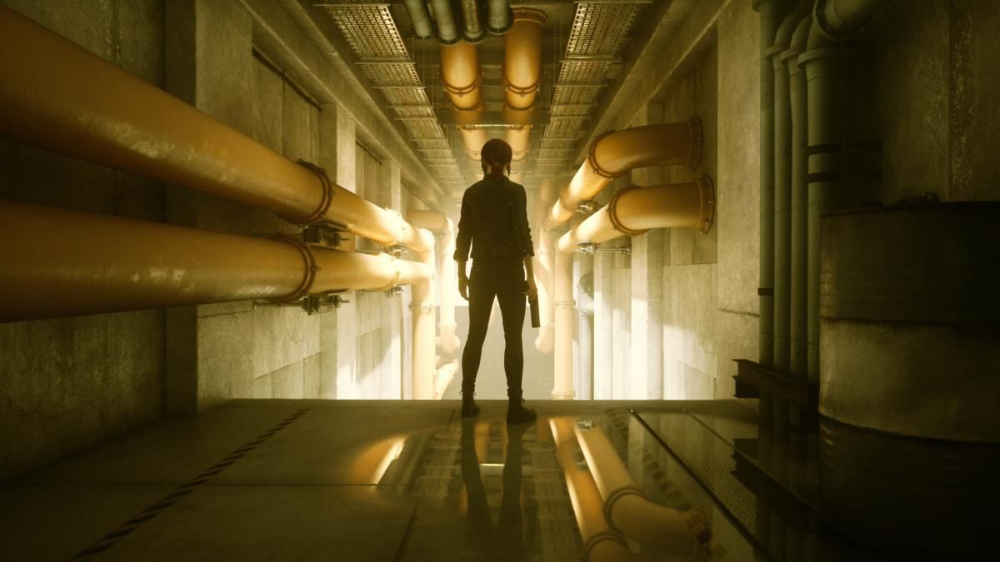
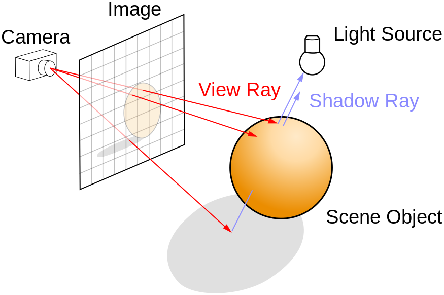

El Ray Tracing ha sido el último gran avance en la iluminación en videojuegos. Se trata de una tecnología de renderizado de gráficos creada por Nvidia con el objetivo de mejorar la manera en la que se representa y calcula la iluminación en tiempo real en los videojuegos, a través de un sistema de trazado de rayos, que imita el funcionamiento de la luz en la vida real.
La técnica consiste en lanzar una serie de “rayos” desde la cámara del jugador, a través de cada pixel de la pantalla, a la escena en 3D y luego a las fuentes de luz (lámparas, bombillas, fuego, etc.). Estos rayos dependiendo de con que se crucen durante su recorrido a través de la escena podrán rebotar, frenarse o atravesar los objetos, dependiendo del material por el que esté formado cada uno. Como resultado se crea en la escena una iluminación con un alto nivel de realismo, que incluye reflejos, sombras, sombras indirectas y refracciones.
Este método para calcular la iluminación de una escena provoca que se genere mucho ruido en las imágenes, lo que estropea mucho el resultado, así que como parte del proceso se aplica a los fotogramas un sistema de reducción del ruido que da como resultado los fotogramas finales. Incluso utilizando recursos dedicados únicamente al funcionamiento de este método de iluminación, como pueden ser los RT Cores de las gráficas de Nvidia, la demanda de potencia es demasiado alta para que el videojuego se ejecute con fluidez. Por ello este proceso no se realiza con todas y cada una de las fuentes de luz de la escena, sino solo en las zonas con mayor prioridad para la escena, intentando así reducir la potencia de computación necesaria. Y aun así se consiguen resultados muy llamativos.
Vídeo de Nate Gentile sobre el Ray Tracing